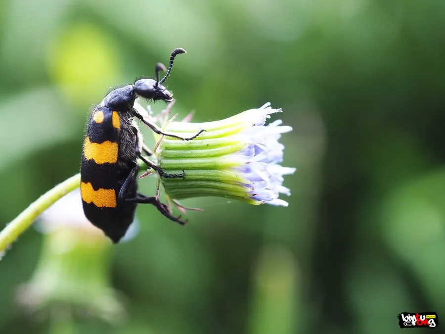

昆虫 · 动物界
大斑芫菁 Mylabris phalerata

体色黑黄相间、体内含斑蝥素的有毒甲虫，中药斑蝥的来源之一，接触皮肤会引起红肿起疱，需谨慎防护。
- 分类
- 门节肢动物门纲昆虫纲目鞘翅目科芫菁科属斑芫菁属
- 栖息环境
- 草地、农田、山坡与豆科植物生长地
- 地理分布
- 中国大部分地区，以及东南亚部分地区
- 保护级别
- 暂无评估；有毒昆虫，需防接触
物种志
大斑芫菁成虫体长约 1.5–2.5 cm，体黑色，鞘翅上有黄色或橙黄色的宽大斑纹，头胸部和足黑色，体表有细毛。它是芫菁科昆虫，体内含有斑蝥素，这是一种强烈的发疱剂，接触皮肤会引起红肿、灼痛和水疱。
它生活在草地、农田和山坡，成虫取食豆科等植物的花和叶，幼虫则寄生在蝗虫卵块等蜂巢状结构中。大斑芫菁是中国传统中药斑蝥的来源之一，但斑蝥素毒性很强，必须经过专业炮制并在医生指导下使用，绝不能自行捕捉入药或让儿童接触。野外遇到它时不要用手直接抓取，若皮肤接触到其体液，应立即用大量清水冲洗并就医。
形态与习性
- 食性成虫取食豆科等植物的花和叶
- 体长约 1.5–2.5 cm
- 识别体黑色，鞘翅有黄色或橙黄色宽斑
- 毒性体内含斑蝥素，接触皮肤会红肿起疱
- 药用中药斑蝥的来源之一，须专业炮制后使用
趣味知识
- 大斑芫菁体内的斑蝥素接触皮肤，会引起红肿和水疱。
- 它是中药斑蝥的来源之一，但必须经过专业炮制，不能自行使用。
- 野外遇到斑蝥时不要用手抓，皮肤沾到体液要立即冲洗。